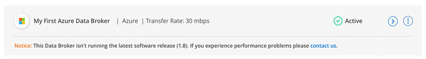

Notas de la versión
Notas de la versión
Novedades de la copia y sincronización de BlueXP
 Sugerir cambios
Sugerir cambios
Descubre las novedades en la copia y sincronización de BlueXP.
11 de febrero de 2024
Filtra directorios por regex
Los usuarios ahora tienen la opción de filtrar directorios usando regex.
26 de noviembre de 2023
Soporte de clase de almacenamiento de datos fríos para Azure Blob
El nivel de almacenamiento de datos fríos de Azure Blob ahora está disponible al crear una relación de sincronización.
Soporte para la región de Tel Aviv en agentes de datos de AWS
Tel Aviv es ahora una región compatible al crear un agente de datos en AWS.
Actualizar a la versión del nodo para los agentes de datos
Todos los nuevos agentes de datos utilizarán ahora la versión del nodo 21,2.0. Los agentes de datos que no son compatibles con esta actualización, como CentOS 7,0 y Ubuntu Server 18,0, ya no funcionarán con la copia y sincronización de BlueXP.
3 de septiembre de 2023
Excluir archivos por regex
Los usuarios ahora tienen la opción de excluir archivos usando regex.
Agregue S3 claves al crear un agente de datos de Azure
Los usuarios ahora pueden agregar claves de acceso y claves secretas de AWS S3 al crear un agente de datos de Azure.
6 de agosto de 2023
Utilice grupos de seguridad de Azure existentes al crear un agente de datos
Los usuarios ahora tienen la opción de usar grupos de seguridad de Azure existentes al crear un agente de datos.
La cuenta de servicio utilizada al crear el broker de datos debe tener los siguientes permisos:
-
«Microsoft.Network/networkSecurityGroups/securityRules/read"
-
«Microsoft.Network/networkSecurityGroups/read"
Cifrar datos al sincronizar con Google Storage
Los usuarios ahora tienen la opción de especificar una clave de cifrado gestionada por el cliente al crear una relación de sincronización con un depósito de Google Storage como destino. Puede introducir manualmente la clave o elegir entre una lista de las claves en una sola región.
La cuenta de servicio utilizada al crear el broker de datos debe tener los siguientes permisos:
-
Cloudkms.cryptoKeys.list
-
Cloudkms.keyrings.list
9 de julio de 2023
Elimine varias relaciones de sincronización a la vez
Los usuarios ahora pueden eliminar más de una relación de sincronización a la vez en la interfaz de usuario.
Copiar sólo ACL
Los usuarios ahora tienen opciones adicionales para copiar la información de ACL en las relaciones CIF y NFS. Al crear o administrar una relación de sincronización, solo puede copiar archivos, copiar información de ACL o copiar archivos e información de ACL.
Actualizado a Node.js 20
Copy and sync se ha actualizado a Node.js 20. Se actualizarán todos los agentes de datos disponibles. Los sistemas operativos incompatibles con esta actualización no se pueden instalar y los sistemas existentes incompatibles pueden experimentar problemas de rendimiento.
11 de junio de 2023
Respalde la cancelación automática por minutos
Las sincronizaciones activas que no se hayan completado ahora se pueden anular después de quince minutos utilizando la función Tiempo de espera de sincronización.
Copiar metadatos de tiempo de acceso
En las relaciones que incluyen un sistema de archivos, la función Copy for Objects ahora copia los metadatos de tiempo de acceso.
8 de mayo de 2023
Funciones de enlace físico
Ahora los usuarios pueden incluir enlaces físicos para sincronizaciones que impliquen relaciones NFS a NFS no seguras.
Capacidad de añadir certificado de usuario para agentes de datos en relaciones NFS seguras
Los usuarios ahora pueden establecer su propio certificado para el agente de datos de destino al crear una relación NFS segura. Deberán establecer un nombre de servidor y proporcionar una clave privada y un ID de certificado al hacerlo. Esta función está disponible para todos los agentes de datos.
Período de exclusión extendido para archivos modificados recientemente
Los usuarios ahora pueden excluir los archivos que se hayan modificado hasta 365 días antes de la sincronización programada.
Filtre las relaciones en la interfaz de usuario por ID de relación
Aquellos que usan la API RESTful ahora pueden filtrar relaciones usando identificadores de relaciones.
2 de abril de 2023
Compatibilidad adicional para las relaciones de Gen2 de Azure Data Lake Storage
Ahora puede crear relaciones de sincronización con Azure Data Lake Storage Gen2 como origen y destino con lo siguiente:
-
Azure NetApp Files
-
Amazon FSX para ONTAP
-
Cloud Volumes ONTAP
-
ONTAP en las instalaciones
Filtrar directorios por ruta completa
Además de filtrar directorios por nombre, ahora puede filtrar directorios por su ruta completa.
7 de marzo de 2023
Cifrado EBS para agentes de datos de AWS
Ahora puede cifrar volúmenes de agentes de datos de AWS mediante una clave KMS desde su cuenta.
5 de febrero de 2023
Compatibilidad adicional para Azure Data Lake Storage Gen2, almacenamiento ONTAP S3 y NFS
Cloud Sync ahora admite relaciones de sincronización adicionales para el almacenamiento ONTAP S3 y NFS:
-
Almacenamiento ONTAP S3 en NFS
-
NFS a almacenamiento de ONTAP S3
Cloud Sync también ofrece compatibilidad adicional para el almacenamiento en lagos de datos Azure Gen2 como origen y destino para:
-
Servidor NFS
-
Servidor SMB
-
Almacenamiento ONTAP S3
-
StorageGRID
-
Almacenamiento de objetos en cloud de IBM
Actualice al sistema operativo de Amazon Web Services Data broker
El sistema operativo para los agentes de datos de AWS se ha actualizado a Amazon Linux 2022.
3 de enero de 2023
Muestra la configuración local de Data broker en la interfaz de usuario
Ahora existe una opción Mostrar configuración que permite a los usuarios ver la configuración local de cada Data broker en la interfaz de usuario.
Actualice a Azure y el sistema operativo de agentes de datos Google Cloud
El sistema operativo para los agentes de datos en Azure y Google Cloud se ha actualizado a Rocky Linux 9.0.
11 de diciembre de 2022
Filtrar directorios por nombre
Ahora hay disponible una nueva configuración de excluir nombres de directorio para las relaciones de sincronización. Los usuarios pueden filtrar un máximo de 15 nombres de directorio desde su sincronización. Los directorios .copy-fload, .snapshot, ~snapshot se excluyen de forma predeterminada.
Compatibilidad adicional con Amazon S3 y ONTAP S3 Storage
Cloud Sync ahora admite relaciones de sincronización adicionales para AWS S3 y el almacenamiento de ONTAP S3:
-
AWS S3 a almacenamiento ONTAP S3
-
Almacenamiento ONTAP S3 en AWS S3
30 de octubre de 2022
Sincronización continua desde Microsoft Azure
La configuración de Continuous Sync ahora es compatible desde un bucket de almacenamiento de Azure de origen a un almacenamiento en cloud mediante un agente de datos de Azure.
Después de la sincronización inicial de datos, Cloud Sync escucha los cambios en el bloque de almacenamiento de Azure de origen y sincroniza constantemente los cambios en el destino a medida que se producen. Esta configuración está disponible cuando se sincroniza desde un bucket de almacenamiento de Azure con almacenamiento Azure Blob, CIFS, Google Cloud Storage, IBM Cloud Object Storage, NFS y StorageGRID.
El agente de datos de Azure necesita un rol personalizado y los siguientes permisos para utilizar este ajuste:
'Microsoft.Storage/storageAccounts/read',
'Microsoft.EventGrid/systemTopics/eventSubscriptions/write',
'Microsoft.EventGrid/systemTopics/eventSubscriptions/read',
'Microsoft.EventGrid/systemTopics/eventSubscriptions/delete',
'Microsoft.EventGrid/systemTopics/eventSubscriptions/getFullUrl/action',
'Microsoft.EventGrid/systemTopics/eventSubscriptions/getDeliveryAttributes/action',
'Microsoft.EventGrid/systemTopics/read',
'Microsoft.EventGrid/systemTopics/write',
'Microsoft.EventGrid/systemTopics/delete',
'Microsoft.EventGrid/eventSubscriptions/write',
'Microsoft.Storage/storageAccounts/write'4 de septiembre de 2022
Compatibilidad adicional con Google Drive
-
Cloud Sync ahora admite relaciones de sincronización adicionales para Google Drive:
-
Google Drive a servidores NFS
-
Google Drive a servidores SMB
-
-
También puede generar informes para relaciones de sincronización que incluyan Google Drive.
Mejora de sincronización continua
Ahora puede activar la configuración de sincronización continua en los siguientes tipos de relaciones de sincronización:
-
Bloque de S3 a un servidor NFS
-
Google Cloud Storage en un servidor NFS
Notificaciones por correo electrónico
Ahora puede recibir notificaciones Cloud Sync por correo electrónico.
Para recibir las notificaciones por correo electrónico, deberá activar la configuración de Notificaciones en la relación de sincronización y, a continuación, configurar las alertas y notificaciones en BlueXP.
31 de julio de 2022
Unidad de Google
Ahora puede sincronizar datos de un servidor NFS o SMB en Google Drive. Tanto "My Drive" como "Shared Drives" son compatibles como destinos.
Antes de crear una relación de sincronización que incluya Google Drive, debe configurar una cuenta de servicio que tenga los permisos necesarios y una clave privada. "Más información acerca de los requisitos de Google Drive".
Compatibilidad adicional con Azure Data Lake
Cloud Sync ahora admite relaciones de sincronización adicionales para el almacenamiento en lagos de datos de Azure Gen2:
-
Amazon S3 a Azure Data Lake Storage Gen2
-
Almacenamiento de objetos en cloud de IBM a Azure Data Lake Storage Gen2
-
Almacenamiento de StorageGRID a Azure Data Lake Gen2
Nuevas formas de configurar relaciones de sincronización
Hemos añadido formas adicionales de configurar relaciones de sincronización directamente desde el lienzo de BlueXP.
Arrastre y suelte
Ahora puede configurar una relación de sincronización desde el lienzo arrastrando y soltando un entorno de trabajo sobre otro.

Configuración del panel derecho
Ahora puede configurar una relación de sincronización para el almacenamiento de Azure Blob o para Google Cloud Storage seleccionando el entorno de trabajo en Canvas y seleccionando la opción de sincronización en el panel derecho.

3 de julio de 2022
Compatibilidad con Azure Data Lake Storage Gen2
Ahora puede sincronizar datos de un servidor NFS o SMB en Azure Data Lake Storage Gen2.
Al crear una relación de sincronización que incluya el lago de datos de Azure, debe proporcionar a Cloud Sync la cadena de conexión de la cuenta de almacenamiento. Debe ser una cadena de conexión normal, no una firma de acceso compartido (SAS).
Sincronización continua desde Google Cloud Storage
La configuración de Continuous Sync ahora es compatible con un bucket de Google Cloud Storage origen con un destino de almacenamiento en cloud.
Después de la sincronización inicial de datos, Cloud Sync escucha los cambios en el bucket de Google Cloud Storage de origen y sincroniza continuamente los cambios en el destino a medida que se producen. Esta configuración está disponible cuando se sincroniza un bucket de Google Cloud Storage con S3, Google Cloud Storage, un almacenamiento blob de Azure, StorageGRID o IBM Storage.
La cuenta de servicio asociada con el agente de datos necesita los siguientes permisos para utilizar esta configuración:
- pubsub.subscriptions.consume
- pubsub.subscriptions.create
- pubsub.subscriptions.delete
- pubsub.subscriptions.list
- pubsub.topics.attachSubscription
- pubsub.topics.create
- pubsub.topics.delete
- pubsub.topics.list
- pubsub.topics.setIamPolicy
- storage.buckets.updateNueva compatibilidad regional con Google Cloud
El agente de datos de Cloud Sync ahora es compatible con las siguientes regiones de Google Cloud:
-
Colón (EE. UU.-este 5)
-
Dallas (EE.UU.-sur-1)
-
Madrid (europa-sur-oeste)
-
Milán (europa-west8)
-
París (europa-West9)
Nuevo tipo de máquina de Google Cloud
El tipo de máquina predeterminado para el agente de datos en Google Cloud es ahora n2-standard-4.
6 de junio de 2022
Sincronización continua
Una nueva configuración le permite sincronizar continuamente cambios de un bloque de S3 de origen a un destino.
Después de la sincronización inicial de datos, Cloud Sync escucha los cambios en el bloque de S3 de origen y sincroniza constantemente los cambios en el destino a medida que se producen. No es necesario volver a analizar el origen a intervalos programados. Esta configuración solo está disponible cuando se sincroniza desde un bloque de S3 con S3, Google Cloud Storage, un almacenamiento blob de Azure, StorageGRID o IBM Storage.
Tenga en cuenta que la función IAM asociada con el agente de datos necesitará los siguientes permisos para utilizar esta configuración:
"s3:GetBucketNotification",
"s3:PutBucketNotification"Estos permisos se agregan automáticamente a los nuevos agentes de datos que cree.
Muestra todos los volúmenes ONTAP
Cuando crea una relación de sincronización, Cloud Sync ahora muestra todos los volúmenes en un sistema Cloud Volumes ONTAP de origen, un clúster ONTAP en las instalaciones o FSX para el sistema de archivos ONTAP.
Anteriormente, Cloud Sync solo mostraría los volúmenes que coincidía con el protocolo seleccionado. Ahora se muestran todos los volúmenes, pero los volúmenes que no coinciden con el protocolo seleccionado o que no tienen un recurso compartido o una exportación se atenúan y no se pueden seleccionar.
Copiando etiquetas a Azure Blob
Cuando crea una relación de sincronización en la que Azure Blob es el destino, Cloud Sync ahora le permite copiar etiquetas en el contenedor de Azure Blob:
-
En la página Ajustes, puede utilizar el ajuste Copiar para objetos para copiar etiquetas del origen al contenedor de Azure Blob. Esto se suma a copiar metadatos.
-
En la página Etiquetas/metadatos, puede especificar códigos de índice blob para establecer en los objetos que se copian en el contenedor de Azure Blob. Anteriormente, solo se podían especificar metadatos de relaciones.
Estas opciones son compatibles cuando Azure Blob es el destino y el origen es Azure Blob o un extremo compatible con S3 (S3, StorageGRID o IBM Cloud Object Storage).
1 de mayo de 2022
Tiempo de espera de sincronización
Ahora hay disponible un nuevo valor de tiempo de espera de sincronización* para las relaciones de sincronización. Esta configuración le permite definir si Cloud Sync debe cancelar una sincronización de datos si no se ha completado en el número de horas o días especificado.
Notificaciones
Ahora hay disponible una nueva configuración de Notificaciones para las relaciones de sincronización. Esta configuración le permite elegir si desea recibir notificaciones de Cloud Sync en el Centro de notificación de BlueXP. Es posible habilitar notificaciones para que la sincronización de los datos se haya realizado correctamente, que no se hayan podido sincronizar los datos y que se haya cancelado.

3 de abril de 2022
Mejoras del grupo de agentes de datos
Hemos realizado varias mejoras en los grupos de agentes de datos:
-
Ahora puede mover un agente de datos a un grupo nuevo o existente.
-
Ahora puede actualizar la configuración del proxy de un agente de datos.
-
Por último, también puede eliminar grupos de agentes de datos.
Filtro del tablero de a bordo
Ahora puede filtrar el contenido de la consola de sincronización para buscar fácilmente relaciones de sincronización que se ajusten a un estado determinado. Por ejemplo, puede filtrar las relaciones de sincronización que tengan un estado de error

3 de marzo de 2022
Ordenación en el tablero de a bordo
Ahora ordena el panel por nombre de relación de sincronización.

Mejora de la integración de Data Sense
En la versión anterior, presentamos la integración de Cloud Sync con Cloud Data Sense. En esta actualización, mejoramos la integración facilitando la creación de la relación de sincronización. Después de iniciar una sincronización de datos desde Cloud Data Sense, toda la información de origen se encuentra en un único paso y solo requiere que introduzca unos cuantos detalles clave.

6 de febrero de 2022
Mejora a los grupos de agentes de datos
Hemos cambiado la forma en que interactúa con los agentes de datos haciendo hincapié en data broker groups.
Por ejemplo, cuando crea una nueva relación de sincronización, selecciona el intermediario de datos group que se va a utilizar con la relación, en lugar de un intermediario de datos específico.

En la pestaña gestionar agentes de datos, también se muestra el número de relaciones de sincronización que administra un grupo de Data broker.

Descargar informes en PDF
Ahora puede descargar el PDF de un informe.
2 de enero de 2022
Nuevas relaciones de sincronización de Box
Se admiten dos nuevas relaciones de sincronización:
-
Del buzón a Azure NetApp Files
-
Box to Amazon FSX for ONTAP
Nombres de las relaciones
Ahora puede proporcionar un nombre significativo a cada una de sus relaciones de sincronización para identificar más fácilmente el propósito de cada relación. Puede agregar el nombre al crear la relación y en cualquier momento después.

Enlaces privados S3
Al sincronizar datos con o desde Amazon S3, puede elegir si desea usar un enlace privado de S3. Cuando el agente de datos copia datos del origen al destino, pasa por el enlace privado.
Tenga en cuenta que la función IAM asociada con el agente de datos necesitará el siguiente permiso para utilizar esta función:
"ec2:DescribeVpcEndpoints"Este permiso se agrega automáticamente a los nuevos agentes de datos que cree.
Recuperación instantánea de Glacier
Ahora puede elegir la clase de almacenamiento Glacier Instant Retrieval cuando Amazon S3 es el destino de una relación de sincronización.
ACL del almacenamiento de objetos para recursos compartidos de SMB
Cloud Sync ahora admite la copia de ACL de almacenamiento de objetos en recursos compartidos de SMB. Antes, solo admitía la copia de ACL de un recurso compartido de SMB a un almacenamiento de objetos.
SFTP a S3
Ahora es posible crear una relación de sincronización desde SFTP a Amazon S3 en la interfaz de usuario. Esta relación de sincronización se admitía previamente con la API únicamente.
Mejora de la vista de tabla
Hemos rediseñado la vista de tabla de la Consola para facilitar su uso. Si selecciona Más información, Cloud Sync filtra el panel de control para mostrarle más información sobre esa relación específica.

Apoyo para la región de Jarkarta
Cloud Sync ahora da soporte a la puesta en marcha de un agente de datos en la región del Pacífico asiático de AWS (Yakarta).
28 de noviembre de 2021
ACL de SMB para el almacenamiento de objetos
Ahora, Cloud Sync puede copiar listas de control de acceso (ACL) al configurar una relación de sincronización desde un recurso compartido de SMB de origen al almacenamiento de objetos (excepto ONTAP S3).
Cloud Sync no admite la copia de ACL de almacenamiento de objetos en recursos compartidos de SMB.
Actualice las licencias
Ahora puede actualizar las licencias de Cloud Sync que ha ampliado.
Si ha ampliado una licencia de Cloud Sync que ha comprado a NetApp, puede volver a añadir la licencia para actualizar la fecha de vencimiento.
Actualizar credenciales de Box
Ahora puede actualizar las credenciales de Box para una relación de sincronización existente.
31 de octubre de 2021
Soporte de la caja
La compatibilidad con cajas ya está disponible en la interfaz de usuario de Cloud Sync como vista previa.
El cuadro puede ser el origen o el destino en varios tipos de relaciones de sincronización. "Consulte la lista de relaciones de sincronización compatibles".
Configuración de fecha de creación
Cuando un servidor SMB es el origen, una nueva configuración de relación de sincronización denominada Date Created le permite sincronizar los archivos que se crearon después de una fecha específica, antes de una fecha específica o entre un intervalo de tiempo específico.
4 de octubre de 2021
Soporte adicional de Box
Cloud Sync ahora admite relaciones de sincronización adicionales para "Caja" Cuando se utiliza la API de Cloud Sync:
-
Amazon S3 to Box
-
Almacenamiento de objetos en cloud IBM a Box
-
StorageGRID a caja
-
Box to an NFS Server
-
De un servidor SMB
Informes para rutas SFTP
Ahora puede hacerlo "cree un informe" Para rutas SFTP.
2 de septiembre de 2021
Compatibilidad con FSX para ONTAP
Ahora puede sincronizar datos con o desde un sistema de archivos Amazon FSX para ONTAP.
1 de agosto de 2021
Actualizar las credenciales
Cloud Sync ahora le permite actualizar el agente de datos con las últimas credenciales del origen o destino en una relación de sincronización existente.
Esta mejora puede ayudar si sus políticas de seguridad requieren que actualice las credenciales de forma periódica. "Aprenda a actualizar las credenciales".

Etiquetas para destinos de almacenamiento de objetos
Al crear una relación de sincronización, ahora puede añadir etiquetas al destino de almacenamiento de objetos en una relación de sincronización.
Amazon S3, Azure Blob, Google Cloud Storage, IBM Cloud Object Storage y StorageGRID admiten la adición de etiquetas.

Soporte para Box
Cloud Sync ahora es compatible "Caja" Como origen en una relación de sincronización con Amazon S3, StorageGRID e IBM Cloud Object Storage cuando se usa la API de Cloud Sync.
IP pública para agente de datos en Google Cloud
Al implementar un agente de datos en Google Cloud, ahora puede elegir si desea habilitar o deshabilitar una dirección IP pública para la instancia de la máquina virtual.
Volumen de protocolo doble para Azure NetApp Files
Cuando elige el volumen de origen o de destino para Azure NetApp Files, Cloud Sync ahora muestra un volumen de doble protocolo independientemente del protocolo que elija para la relación de sincronización.
7 de julio de 2021
ONTAP S3 Storage y Google Cloud Storage
Cloud Sync ahora admite relaciones de sincronización entre el almacenamiento de ONTAP S3 y un bloque de Google Cloud Storage en la interfaz de usuario.
Etiquetas de metadatos de objetos
Cloud Sync ahora puede copiar metadatos de objetos y etiquetas entre almacenamiento basado en objetos al crear una relación de sincronización y habilitar una configuración.
Apoyo a HashiCorp Vaults
Ahora puede configurar el agente de datos para acceder a las credenciales desde un almacén HashiCorp externo mediante la autenticación con una cuenta de servicio de Google Cloud.
Defina etiquetas o metadatos para bloque de S3
Al configurar una relación de sincronización con un bloque de Amazon S3, el asistente de relación de sincronización ahora le permite definir las etiquetas o los metadatos que desea guardar en los objetos del bloque de S3 de destino.
La opción de etiquetado anteriormente formaba parte de la configuración de la relación de sincronización.
7 de junio de 2021
Clases de almacenamiento en Google Cloud
Cuando un bloque de Google Cloud Storage es el destino de una relación de sincronización, ahora puede elegir la clase de almacenamiento que desee utilizar. Cloud Sync admite las siguientes clases de almacenamiento:
-
Estándar
-
Nearline
-
Coldline
-
Archivado
2 de mayo de 2021
Errores en los informes
Ahora puede ver los errores encontrados en los informes y eliminar el último informe o todos los informes.
Comparar atributos
Ahora hay disponible una nueva configuración de Comparar por para cada relación de sincronización.
Esta configuración avanzada le permite elegir si Cloud Sync debe comparar ciertos atributos al determinar si un archivo o directorio ha cambiado y debe volver a sincronizarse.
11 de abril de 2021
Se retira el servicio independiente de Cloud Sync
Se ha retirado el servicio independiente de Cloud Sync. Ahora debería acceder a Cloud Sync directamente desde BlueXP, donde están disponibles todas las mismas funciones.
Después de iniciar sesión en BlueXP, puede cambiar a la ficha Sincronizar en la parte superior y ver sus relaciones, como antes.
Cubos de Google Cloud en diferentes proyectos
Al configurar una relación de sincronización, puede elegir entre bloques de Google Cloud en diferentes proyectos si proporciona los permisos necesarios para la cuenta de servicio del agente de datos.
Metadatos entre Google Cloud Storage y S3
Cloud Sync ahora copia metadatos entre Google Cloud Storage y los proveedores S3 (AWS S3, StorageGRID y IBM Cloud Object Storage).
Reinicie los agentes de datos
Ahora puede reiniciar un agente de datos desde Cloud Sync.

Mensaje cuando no esté ejecutando la versión más reciente
Cloud Sync Now identifica cuándo un agente de datos no ejecuta la última versión del software. Este mensaje puede ayudarle a asegurarse de que recibe las últimas características y funcionalidades.
